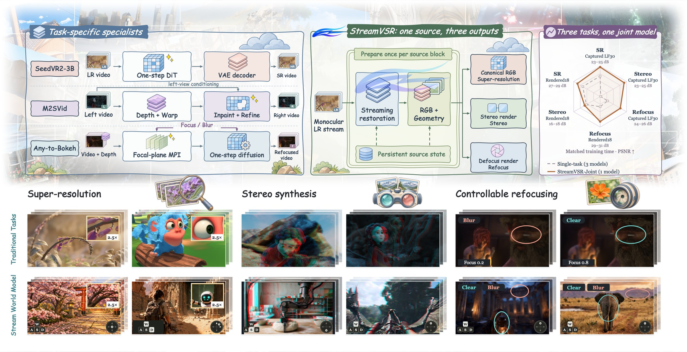
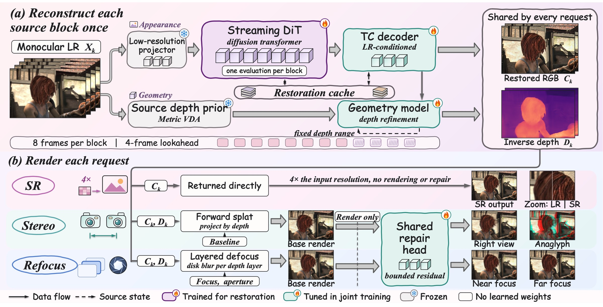
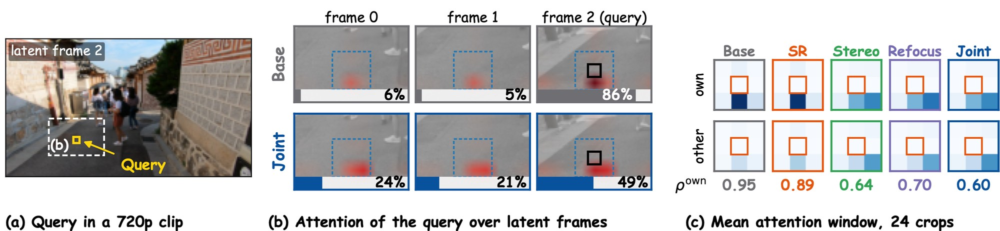
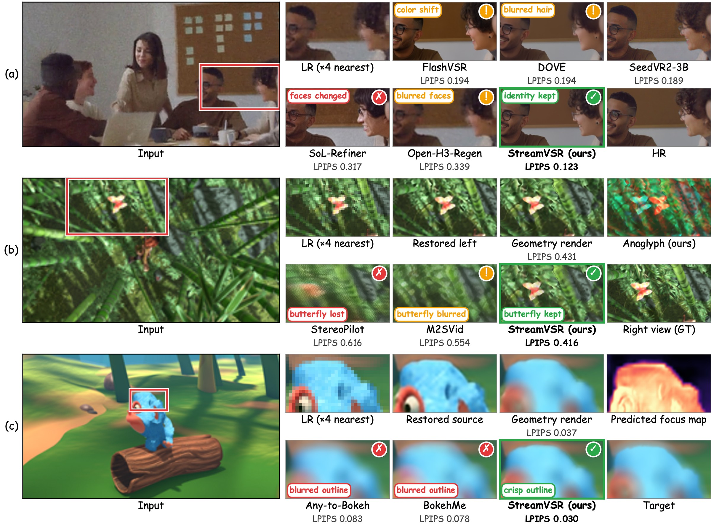
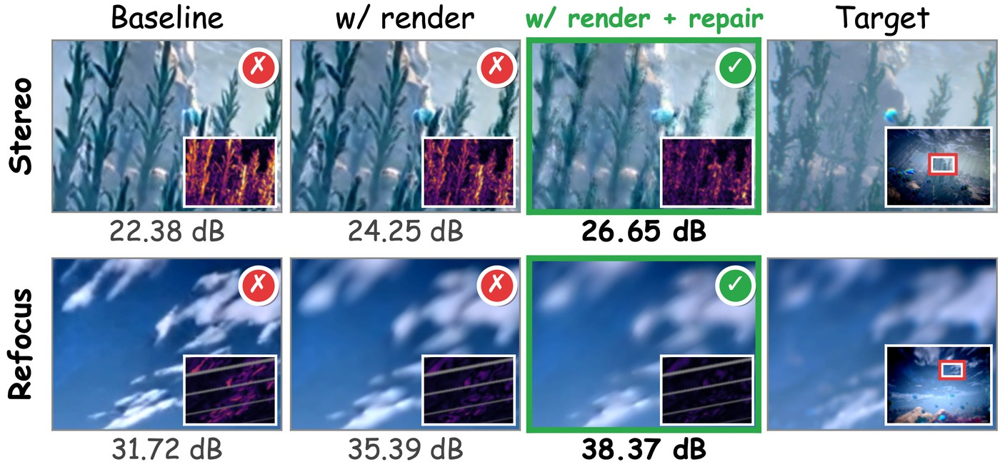
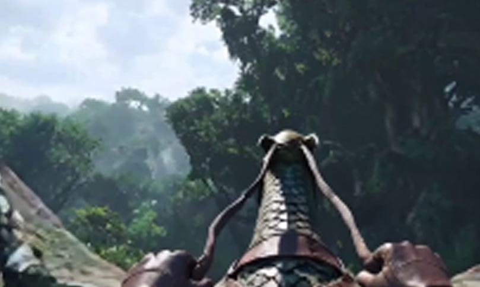
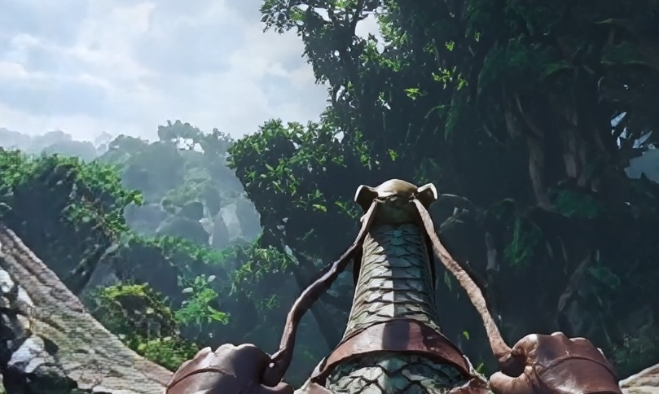
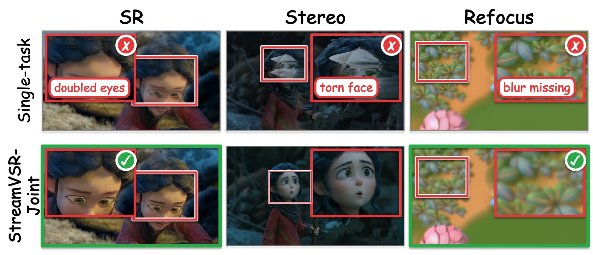
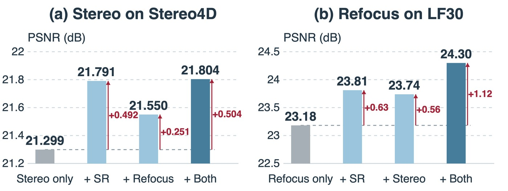

Unified Streaming Visual Model for Video Super-Resolution, Stereo Synthesis, and Refocusing
Paper under review
TL;DR — StreamVSR restores each incoming block of a monocular video once, predicts depth on a common scale, and renders super-resolved, stereo, and refocused views from that single reconstruction. Training the decoder with all three signals makes every output better than training it for one task.
See it in actionWhen a world model or a camera streams monocular video, a viewer may want more detail, a stereo view, or to shift focus between objects. All three depend on the same surfaces, so StreamVSR reconstructs those surfaces once per block and serves every request from them.

As a visual world model generates a monocular video stream, a viewer may want to see finer detail, view the scene in stereo, or shift focus between objects. All three requests depend on the same surfaces. Super-resolution recovers their texture, and depth determines both where that texture appears in the other eye and how sharp it appears at a chosen focus. We introduce StreamVSR, a streaming model that unifies video super-resolution, monocular-to-stereo synthesis, and controllable refocusing. With four frames of lookahead, StreamVSR restores each incoming block once and estimates depth on a common scale across blocks. The restored frames provide the super-resolution output and, together with depth, the basis for rendering stereo and refocused views. During joint training, the source view supervises texture, the right view constrains its placement, and the refocused view constrains which details remain sharp. All three signals train the same decoder. On 30 captured light-field sequences, joint tuning improves all three tasks over separate tuning at equal training time. StreamVSR leads the evaluated specialists on all reported metrics for super-resolution on VideoLQ50 and synthetic refocusing on the TartanAir test set. On Mono2Stereo, StreamVSR achieves approximately 34% lower right-view LPIPS than the best specialist baseline. For seven 4K viewing requests, reusing the reconstruction cuts processing time by 56% for the next eight frames after warm-up compared with restoring each block separately for each request, with identical output pixels.
A one-step streaming DiT restores each block of the low-resolution stream. A temporal decoder returns canonical RGB, a depth prior gives geometry on a common scale, and an optical head renders the stereo and refocused views and repairs what rendering alone cannot fix.

Each block is restored once with four frames of lookahead. The persistent source state keeps texture and depth consistent across blocks, and every viewing request reuses it.
Stereo views are warped and refocused views are blurred from the restored image and depth; a repair stage fills disocclusions and fixes defocus at depth edges.
Texture is checked by the source view, its placement by the right view, and its sharpness by the refocused view. The shared decoder learns from all three.

Each world model's own frames go straight into StreamVSR, which enlarges them 4× in causal streaming blocks with one DiT evaluation per block. A full frame shrunk to fit a web page hides most of that detail, so the two windows show the boxed region at the output's native pixels.
A degraded Pexels clip (the clip of the main comparison figure). Pick a baseline and a frame: the slider compares it with StreamVSR, and the panel on the right is the ground-truth frame, so you can check which output keeps each person's identity. Numbers are crop LPIPS against the ground truth (lower is better).

Refocusing keeps the viewpoint and changes blur with distance from the focal plane; stereo places the restored texture in the other eye according to depth. Both are rendered from the same restored stream.

On TartanAir, rendering with predicted geometry already beats copying the source, and repair adds more: for stereo PSNR rises from 23.58 to 25.71 to 26.29 dB on the selected trajectories, and for refocusing from 24.14 to 29.18 to 29.69 dB over all 369.
For each generated monocular stream, StreamVSR restores the left view and renders the right one from depth kept on a common scale across blocks. Wiggle alternates the two eyes, so depth reads without glasses; red/cyan, cross-eye and side-by-side are for glasses, free viewing and headsets, and Depth shows the geometry the views are rendered from.
The paper's replay protocol: generated frames are reduced 4× and restored to the generator's own resolution, so these crops are at most 1480 px wide and are shown at no more than 2× their native size. StreamVSR recovers straighter structure than bicubic and, in many crops, more than the generator itself produced. For full 4K output see 4× super-resolution.


| Video source | LPIPS ↓ bicubic | StreamVSR | DISTS ↓ bicubic | StreamVSR |
|---|---|---|---|---|
| LingBot-World 2.0 | 0.405 | 0.247 | 0.150 | 0.127 |
| SANA-WM | 0.361 | 0.250 | 0.085 | 0.084 |
| HelixWorld | 0.405 | 0.217 | 0.127 | 0.102 |
| EchoWM | 0.366 | 0.210 | 0.096 | 0.085 |
Mean per-video scores; StreamVSR is frozen during this evaluation.
Rollouts from five public world-model releases. Each video plays the four outputs side by side as a quick overview (each panel is shown at about 540 px wide, well below the output resolution); click any card to watch it large. Full-resolution output is in 4× super-resolution.
Gallery clips use the released StreamVSR checkpoint with one DiT evaluation per streaming block. “Restore” clips are reduced 4× before restoration; “enhance” clips are enlarged directly. Stereo uses a virtual 6.5 cm baseline; refocus sweeps from near to far with aperture 0.65 and a fixed field of view. Source videos belong to their creators (see credits below).
At equal training time, one jointly tuned decoder beats three separately tuned ones on every task, on captured light fields and on rendered video.

Bars start at 23.5 dB. On Rendered18 the joint model also wins all three tasks (28.72 / 17.17 / 30.64 vs. 28.31 / 17.04 / 29.66 dB).

On Stereo4D, SR supervision alone gives most of the stereo gain (0.492 of 0.504 dB). On Captured LF30, adding both auxiliary tasks improves refocus PSNR by 1.12 dB over refocus alone and by 0.49–0.56 dB over either two-task model.
Seven viewing requests (different baselines and focus settings) on the same GPU, with identical inputs, weights, and output pixels. Sharing the restored block instead of restoring it for every request cuts processing time by more than half.
Codecs excluded. Output pixels are identical in both settings.
Three 720p outputs (SR, stereo, refocus) over 1,000-frame MovieLQ streams, mean of ten streams on the same GPU. The cascade shares InfVSR's output between M2SVid and Any-to-Bokeh.
The two systems produce different pixels (M2SVid computes its right view on a 512-square grid), so this compares runtime across methods only.
@article{streamvsr2026,
title = {StreamVSR: Unified Streaming Visual Model for Video
Super-Resolution, Stereo Synthesis, and Refocusing},
author = {Anonymous},
journal = {Under review},
year = {2026}
}